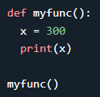

A variable is only available from inside the region it is created.
This is called scope.
Local Scope
A variable created inside a function belongs to the local scope of that function, and can only be used inside that function.

Function Inside Function
As explained in the example above, the variable x is not available outside the function, but it is available for any function inside the function:

Global Scope
A variable created in the main body of the Python code is a global variable and belongs to the global scope.
Global variables are available from within any scope, global and local.

Naming Variables
If you operate with the same variable name inside and outside of a function, Python will treat them as two separate variables, one available in the global scope (outside the function) and one available in the local scope (inside the function):

Global Keyword
If you need to create a global variable, but are stuck in the local scope, you can use the global keyword.
the global keyword makes the variable global.
syntax:
global name ("," name)*

Also, use the global keyword if you want to make a change to a global variable inside a function.

Nonlocal Keyword
the nonlocal keyword is used to work with variables inside nested functions, where the variable should not belong to the inner function.
Use the keyword nonlocal to declare that the variable is not local.

Note:The global keyword can be used to indicate that particular variables live in the global scope and should be rebound there;
the nonlocal statement indicates that particular variables live in an enclosing scope and should be rebound there.
 ->
->
Note: the
local assignment (which is default) didn’t change
scope_test's binding of
spam. The nonlocal assignment changed
scope_test's binding of
spam, and the global assignment changed the module-level binding.